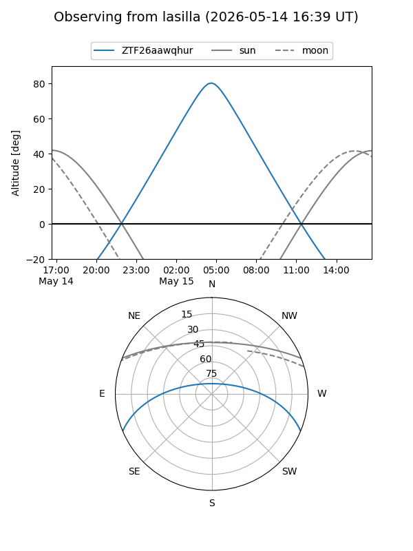
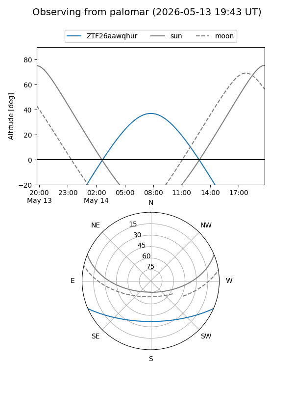

ZTF26aawqhur
Target ZTF26aawqhur at 2026-05-14 10:08
Aliases and brokers:
FINK: link
Lasair: link
ALeRCE: link
alt names
ZTF26aawqhur (ztf,fink_ztf)
Coordinates:
equatorial (ra, dec) = 231.0203,-19.53596
equatorial (HMS+DMS) = 15:24:04.86,-19:32:09.46
galactic (l, b) = (345.4305,+30.46516)
Flags:
Photometry:
last ztfg=17.11
1 ztfg detections
Lightcurve
Visibility


Additional plots